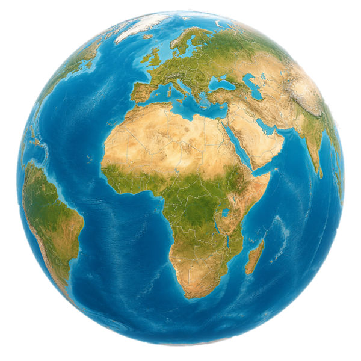

VIAJES APOSTÓLICOS DESTACADOS
Viajes del Papa León XIV
Selecciona un destino para ver videos y listas de reproducción de la visita.

EUROPA 2026
Papa León XIV en España
Cobertura especial de la visita del Papa León XIV a España, con videos seleccionados en una playlist completa.
Ver playlist completa ›
E-BOOK ESPECIAL
Homilías, oraciones y discursos del Papa León XIV
Libro digital con los textos del Papa León XIV durante su viaje apostólico a España.
CLIPS DESTACADOS
Visita del Papa León XIV
Mira momentos breves y especiales de las visitas del Santo Padre.
Mensaje especial a los jóvenes
▶ Ver en YouTubeEncuentro con familias y comunidades
▶ Ver en YouTubeOración por la paz en el mundo
▶ Ver en YouTube
📅
¡El Papa León XIV viene a nuestro encuentro!
Mantente informado sobre fechas, lugares y actividades de su visita al Perú.